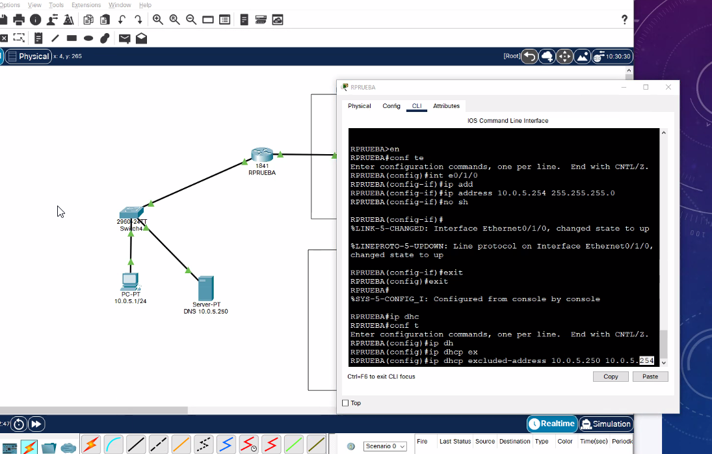

lOS OUTERS SON SERVIDORES DHCP PRO QUE TE PRESTAN DIRECIONES IP.
Generas una primera lista de direcciones que no quieres prestar:

Degines la red donde va a FUNCIONAR (Direccion base de bloque y mascara de subred)
Le das el default gateway
Le das el DNS